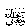

Nabisaid, “The difference between our fasting and that of the Ahle Kitaab (Jews and Christians) is that we eat sehri and they do not.” Nabihas said, “Eat sehri, because in it lies great blessings.”
In another Hadeeth it is said, “In three things are great blessings, in Jamaat (in a group), in eating thareed (a special dish) and in sehri. In this Hadeeth, the use of the word Jamaat is general (for all actions), it includes Salaah with Jamaat and all those good actions done in a group, as Allah’shelp comes to them.
Thareed is a type of tasty food, in which baked bread is cooked with meat. The third thing this Hadeeth speaks of is sehri. When Rasulullahused to invite any of the Sahaabahto eat sehri with him, he used to say: “Come and eat the blessed food with me.”
One Hadeeth says: “Eat sehri and strengthen yourself for the fast, Sleep in the afternoon (siesta) to make it easy to wake up in the later portion of the night (for the worship of Allah.” Abdullah Ibn Haarith reports that one of the Sahaabahsaid, “I once visited Rasulullahat a time when he was busy in eating sehri.” Rasulullah then said: “This is a thing full of barakah, which Allahhas granted you. Do not give it up.”
Rasulullahin encouraging us repeatedly for sehri has said: “If there is nothing else, at least eat a date or drink some water.” Thus, when there are definitely great advantages and reward in sehri, Muslims should try hard to partake in sehri as much as possible. However, in all things moderation (not too less or not too much) is important, and eating more than the required amount is harmful. Neither should so little be eaten that one feels weak while fasting nor should so much be eaten that it causes discomfort. We have been advised not to overeat.
Ibn Hajar has listed different reasons regarding the barakah (blessings) of sehri:
1. The Sunnah is followed.
2. Through sehri, we separate ourselves from the ways of Ahle Kitaab (Jews and Christians), which we are at all times supposed to do.
3. It provides strength for worship of Allah 
4. It causes greater sincerity in the worship of Allah.
5. It aids in preventing bad temper, which normally comes about as a result of hunger.
6. Sehri is the time when duas are accepted.
7. At the time of sehri, one gets the opportunity to remember Allahmake zikr and dua.
It is better that one should eat less in the nights of Ramadhaan than on other nights. After all, there is little benefit in fasting after having filled oneself at sehri and at breaking the fast. The pious people have said, “Whoever remains hungry in Ramadhaan shall remain safe from the evil of Shaytaan throughout the year until the next Ramadhaan.”